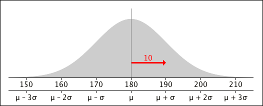

If you don't want to print now,
Probabilities as areas
The distributions of a continuous random variable is defined by a type of histogram called a probability density function (pdf), with the following properties
Based on the properties of histograms, the probability of a value between any two constants is the area under the pdf above this range of values.
Probabilities by integration
Since probability density functions can usually be expressed as simple mathematical functions, these areas can be found as integrals,
\[ P(a \lt X \lt b) \;\; = \; \; \int_a^b {f(x)}\; dx \]Properties of a probability density function
A function \(f(x)\) can be the probability density function of a continuous random variable if and only if
\[ f(x) \;\; \ge \; \; 0 \quad\quad \text{for all } x \text{, and} \] \[ \int_{-\infty}^{\infty} {f(x)}\; dx \;\; = \; \; 1 \](Proved in full version)
The simplest kind of continuous distribution is a rectangular distribution (also called a continuous uniform distribution).
Definition
A random variable, \(X\), is said to have a rectangular distribution with parameters \(a\) and \(b\)
\[ X \;\; \sim \; \; \RectDistn(a, b) \]if its probability density function is
\[ f(x) = \begin{cases} \frac {\large 1} {\large b-a} & \text{for } a \lt x \lt b \\[0.2em] 0 & \text{otherwise} \end{cases} \]Probabilities for rectangular random variables can be easily found using geometry.

Equivalently, using integration,
\[ \begin{align} P(c \lt X \lt d) \;\; &= \; \; \int_c^d {f(x)}\; dx \\ &= \; \; \int_c^d {\frac 1 {b-a}}\; dx \\ &=\;\; \frac {d-c} {b-a} \end{align} \]Example
If \(X \;\; \sim \; \; \RectDistn(0, 10)\),
\[ P(4 \lt X \lt 7) \;\;=\;\; \frac {7-4} {10-0} \;\;=\;\; 0.3 \]In the next two examples, integration is used to find probabilities.
Question
If a continuous random variable, \(X\), has probability density function
\[ f(x) = \begin{cases} 1 - \dfrac x 2 & \quad \text{for } 0 \lt x \lt 2 \\[0.2em] 0 & \quad \text{otherwise} \end{cases} \]what is the probability of getting a value less than 1?
(Solved in full version)
The next example involves a distribution called an exponential distribution; practical applications of this distribution will be described in the next chapter.
Question
If a continuous random variable, \(X\), has probability density function
\[ f(x) = \begin{cases} 4\;e^{-4x} & \quad \text{for } x \ge 0\\[0.2em] 0 & \quad \text{otherwise} \end{cases} \]what is the probability of getting a value less than 1?
(Solved in full version)
The cumulative distribution function has the same definition for a continuous random variable as for a discrete one.
Definition
The cumulative distribution function (CDF) for a continuous random variable \(X\) is the function
\[F(x) \;=\; P(X \le x)\]This probability can be expressed as an integral,
\[F(x) \;\; = \; \; \int_{-\infty}^x f(t)\;dt\]Note that this also implies that
\[f(x) \;\; = \; \; \frac {d}{dx} F(x)\]All cumulative distribution functions monotonically rises from zero to one. However whereas a discrete distribution's CDF is a step function, that of a continuous distribution is a smooth function.
Question: Rectangular distribution
Sketch the cumulative distribution function of a random variable with a rectangular distribution, \(X \sim \RectDistn(1, 5)\).
Question: Exponential distribution
If \(X\) has probability density function
\[ f(x) = \begin{cases} 4\;e^{-4x} & \quad \text{for } x \ge 0\\[0.2em] 0 & \quad \text{otherwise} \end{cases} \]what is its cumulative distribution function?
(Both solved in full version)
A cumulative probability, \(P(X \le x)\), can be found by integration. It is sometimes useful to work in the opposite direction — given a cumulative probability, what is the corresponding value of \(x\)?
Definition
The \(p\)'th quantile of a continuous distribution is the value, \(x\), such that
\[ P(X \le x) \;\; = \; \; p \]When \(p\) is expressed as a percentage, the value is called the \(100p\)'th percentile.
Definition
These three values split the probability density function into four equal areas.
Question
What are the median and quartiles of the \(\RectDistn(1, 5)\) distribution?
(Solved in full version)
The next example is a little harder.
Question
Find a formula for the \(p\)'th quantile of the exponential distribution with probability density function
\[ f(x) = \begin{cases} 4\;e^{-4x} & \text{for } x \ge 0\\[0.2em] 0 & \text{otherwise} \end{cases} \](Solved in full version)
For an infinitesimally small interval of width \(\delta x\),
\[ P(x \lt X \lt x+\delta x) \;\approx\; f(x) \times \delta x\]
If the whole range of possible x-values is split into such slices, the definition of an expected value for a discrete random variables would give
\[ E[X] \;\approx\; \sum {x \times f(x) \; \delta x}\]In the limit, this summation becomes an integral, giving us the following definition.
Definition
The expected value of a continuous random variable with probability density function \(f(x)\) is
\[ E[X] \;=\; \int_{-\infty}^{\infty} {x \times f(x) \; d x}\]This can be generalised:
Definition
If \(X\) is a continuous random variable with probability density function \(f(x)\), the expected value of any function \(g(X)\) is
\[ E\big[g(X)\big] \;=\; \int_{-\infty}^{\infty} {g(x) \times f(x) \; d x}\]We define the mean and variance of a continuous distribution in a similar way to those of a discrete distribution.
Definition
The mean of a continuous random variable is
\[ E[X] \;=\; \mu \]and its variance is
\[ \Var(X) \;=\; \sigma^2 \;=\; E \left[(X - \mu)^2 \right] \]Their interpretations are also similar.
The following result is often useful for evaluating a continuous distribution's variance.
Alternative formula for the variance
A continuous random variable's variance can be written as
\[ \Var (X) \;=\; E \left[(X - \mu)^2 \right] \;=\; E[X^2] - \left( E[X] \right)^2 \]In the next example, you should find the mean and variance of the distribution by integration.
Question
What are the mean and variance of the \(\RectDistn(a, b)\) distribution?
(Solved in full version)
The same definition of independence holds for both discrete and continuous random variables.
Definition
Two random variables, \(X\) and \(Y\), are independent if all events about the value of \(X\) are independent of all events about the value of \(Y\).
Independence of continuous random variables is usually deduced from the way that the variables are measured rather than from mathematical calculations. For example,
Characterisation of independence
For independent continuous random variables, \(X\) and \(Y\),
\[ \begin{align} P(x \lt X \lt x+\delta x &\textbf{ and } y \lt Y \lt y+\delta y) \\ &=\;\; P(x \lt X \lt x+\delta x) \times P(y \lt Y \lt y+\delta y) \\ &\approx\;\; f_X(x)\;f_Y(y) \times \delta x \; \delta y \end{align} \]so
\[ P(X \approx x \textbf{ and } Y \approx y) \;\; \propto \;\; f_X(x)\;f_Y(y) \]This is closely related to the corresponding result for two independent discrete random variables,
\[ P(X=x \textbf{ and } Y=y) \;\;=\;\; p_X(x) \times p_Y(y) \]Random samples
A collection of \(n\) independent identically distributed random variables from the same distribution is called a random sample.
Extending our earlier characterisation of independence of two continuous random variables,
\[ P(X_1 \approx x_1, X_2 \approx x_2, ..., X_n \approx x_n) \;\; \propto \;\; \prod_{i=1}^n f(x_i) \]This is again closely related to the corresponding formula for a random sample from a discrete distribution
\[ P(X_1 = x_1, X_2 = x_2, ..., X_n = x_n) \;\; = \;\; \prod_{i=1}^n p(x_i) \]The results that we showed earlier about sums and means of discrete random variables also hold for variables with continuous distributions. We simply repeat them here.
Linear combination of independent variables
If the means of two independent random variables, \(X\) and \(Y\), are \(\mu_X\) and \(\mu_Y\) and their variances are \(\sigma_X^2\) and \(\sigma_Y^2\), then the linear combination \((aX + bY)\) has mean and variance
\[ \begin {align} E[aX + bY] & = a\mu_X + b\mu_Y \\[0.4em] \Var(aX + bY) & = a^2\sigma_X^2 + b^2\sigma_Y^2 \end {align} \]Sum of a random sample
If \(\{X_1, X_2, ..., X_n\}\) is a random sample of n values from any distribution with mean \(\mu\) and variance \(\sigma^2\), then the sum of the values has mean and variance
\[\begin{aligned} E\left[\sum_{i=1}^n {X_i}\right] & \;=\; n\mu \\ \Var\left(\sum_{i=1}^n {X_i}\right) & \;=\; n\sigma^2 \end{aligned} \]Sample mean
If \(\{X_1, X_2, ..., X_n\}\) is a random sample of n values from any distribution with mean \(\mu\) and variance \(\sigma^2\), then the sample mean has a distribution with mean and variance
\[\begin{aligned} E\big[\overline{X}\big] & \;=\; \mu \\ \Var\big(\overline{X}\big) & \;=\; \frac {\sigma^2} n \end{aligned} \]Central Limit Theorem (informal)
If \(\{X_1, X_2, ..., X_n\}\) is a random sample of n values from any distribution with mean \(\mu\) and variance \(\sigma^2\),
\[\begin{aligned} \sum_{i=1}^n {X_i} & \;\; \xrightarrow[n \rightarrow \infty]{} \;\; \NormalDistn(n\mu, \;\;\sigma_{\Sigma X}^2=n\sigma^2) \\ \overline{X} & \;\; \xrightarrow[n \rightarrow \infty]{} \; \; \NormalDistn(\mu, \;\;\sigma_{\overline X}^2 = \frac {\sigma^2} n) \end{aligned} \]The family of normal distributions is flexible enough to be used as a model for many practical variables.
Definition
A random variable, \(X\), is said to have a normal distribution,
\[ X \;\; \sim \; \; \NormalDistn(\mu,\; \sigma^2) \]if its probability density function is
\[ f(x) \;\;=\;\; \frac 1{\sqrt{2\pi}\;\sigma} e^{- \frac{\large (x-\mu)^2}{\large 2 \sigma^2}} \qquad \text{for } -\infty \lt x \lt \infty \]Normal distributions are symmetric and the two parameters only affect the centre and spread of the distribution.

Standard normal distribution
Definition
A standard normal distribution is one whose parameters are \(\mu = 0\) and \(\sigma = 1\),
\[ Z \;\; \sim \; \; \NormalDistn(0,\; 1) \]A random variable, \(Z\) with a standard normal distribution is often called a z-score.
If \(Z\) has a standard normal distribution, its pdf has a particularly simple form:
\[ f(z) \;\;=\;\; \frac 1{\sqrt{2\pi}} e^{- \frac{\large z^2}{\large 2}} \qquad \text{for } -\infty \lt x \lt \infty \]The mean and variance of a general normal distribution, can be found from those of the standard normal distribution.
Mean and variance of standard normal distribution
If \(Z \sim \NormalDistn(0,\; 1)\), its mean and variance are
\[ E[Z] \;=\; 0 \spaced{and} \Var(Z) \;=\; 1 \](Proved in full version)
A change of variable, \(z = \frac {x-\mu}{\sigma}\), can be used to find the mean and variance of a general normal distribution from this result.
Mean and variance of a general normal distribution
If \(X \sim \NormalDistn(\mu,\; \sigma^2)\), its mean and variance are
\[ E[X] \;=\; \mu \spaced{and} \Var(X) \;=\; \sigma^2 \](Proved in full version)
This explain why the symbols "\(\mu\)" and "\(\sigma^2\)" are used for the normal distribution's two parameters.
The following diagram describes the probability density function of any normal distribution.

It can be used to add a scale appropriate to any values of \(\mu\) and \(\sigma\). For example, the pdf of a \(\NormalDistn(\mu=180, \sigma=10)\) distribution is

Z-scores
The number of standard deviations from the mean is called a z-score.
\[ Z = \frac {X-\mu} {\sigma} \]Z-scores have a standard normal distribution,
\[ Z \;\; \sim \; \; \NormalDistn(0,\; 1) \]Cumulative distribution function
The cumulative distribution function for a \(\NormalDistn(\mu,\; \sigma^2)\) distribution is
\[ F(x) \;\;=\;\; \int_{-\infty}^x {\frac 1{\sqrt{2\pi}\;\sigma} e^{- \frac{\large (u-\mu)^2}{\large 2 \sigma^2}}} du \]This integration cannot be performed algebraically, but numerical algorithms will find cumulative probabilities for you. For example, in Excel you can use the function
= NORM.DIST( \(x\), \(\mu\), \(\sigma\), true)
Normal probabilities from z-scores
Although probabilities for any normal distribution can be found as described above, an alternative method uses z-scores. This lets us find probabilities about a normal random variable using the standard normal distribution.

In Excel, this would be evaluated as
=NORM.S.DIST(z, true)
Although this offers few practical advantages when a computer is used,
We are sometimes given the value of the probability, \(P(X \le x)\) and need to find the value \(x\). If we are provided with a probability, \(p\), then the value \(x\) such that
\[ P(X \le x) = p \]is the \(p\)'th quantile of the distribution of \(X\). We now give an example to illustrate the use of quantiles for a normally distributed random variable.
Example
If the weight of a Fuji apple has the following normal distribution
\[ X \;\; \sim \; \; \NormalDistn(\mu=180, \sigma=10) \]what is the apple weight that will be exceeded with 95% probability? In other words, we want to find the apple weight \(x\) such that
\[ P(X \lt x) \;\;= \;\; 0.05 \]In terms of z-scores,
\[ P(X \lt x) \;= \; P\left(Z \lt \frac {x-180} {10}\right) \;= \; 0.05 \]Using the function "=NORM.S.INV(0.05)" in Excel, we can find that
\[ P(Z \lt -1.645) \;\;=\;\; 0.05 \]Translating back to the original units,
\[ x \;=\; 180 - 1.645 \times 10 \;=\; 163.55 \text{ grams} \]